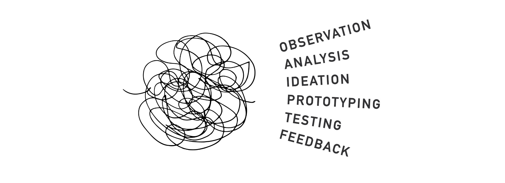

'I find the problem
nobody knows how to address
And build my job around it.'
Christian Felsner
My multidisciplinary background in both science and industry equips me to tackle complex challenges with a holistic perspective. I am passionate about using advancing technologies to improve processes and create sustainable solutions. Collaborating with a diverse, motivated team to develop interdisciplinary and creative solutions is essential to me. I seek the freedom to explore unconventional solutions to set new standards and drive innovation.
Skills
Professional Skills
- Systems Thinking
- Creative Problem Solving
- Project Management
- Rapid Experimentation
- Collaboration & Communication
- Mentoring
- Prototyping & Digital Fabrication
- Data Analytics
Technical Skills
- Office; Google Workspace, Keynote, Notion
- 2D; Adobe Creative Cloud, Affinity, Figma
- 3D; Autodesk-Fusion, -Alias, Blender, Keyshot
- Code; Python
- Other; Agisoft Metashape
Strategy and attitutde
Design Thinking
Design thinking is a problem-solving approach focused on understanding user needs, generating creative solutions, and iterating through prototyping and testing. It is non-linear process based on six exercises; Observation, analysis, ideation, prototyping, testing and feedback. It is a fast process that brings innovative solutions to life.
'Fail fast To succeed sooner!'
David Kelley
hands on approach
At the core of innovation lies rapid experimentation and testing. Creating mock-ups, even from simple materials like cardboard, transforms ideas from abstract concepts into tangible prototypes. This process invites collaboration, sparking discussions and new ideas from others. Just as importantly, it quickly exposes the weaknesses of a concept, allowing us to refine or move on to the next idea with minimal delay.
Project Management
snippet of 3D digital twin

Clear communication and transparent monitoring enable the early identification of potential issues, allowing for timely adjustments and ensuring effective use of resources. Balancing technical expertise with leadership skills is crucial for navigating interdisciplinary teams effectively.